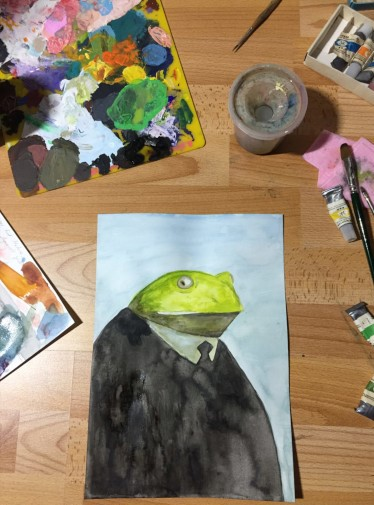

Ich heiße Melanie Kirchkesner und studiere Online Medien an der Hochschule Furtwangen!
Momentan startet bei mir das zweite Semester, leider immer noch online.
Währenddessen beginne ich im Rahmen des Kurses "Grundlagen interaktiver Systeme", mit der Arbeit an diesem Portfolio.
Meine Arbeiten
- Frosch im Anzug
- Typ mit großer Nase
- Katze die sich die Zähne putzt (nicht fertig)
- Und paar andere Sachen die mir jetzt nicht mehr gefallen.
Ich träume selten, aber wenn, dann nehme ich auf was ich geträumt habe hahahha